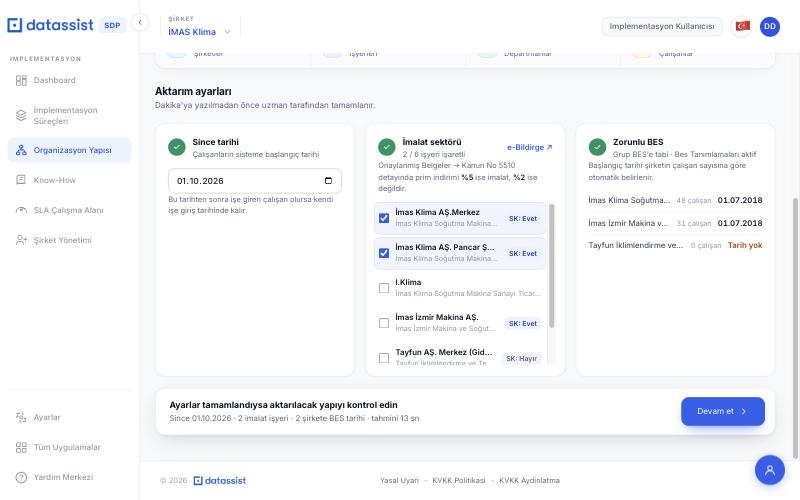
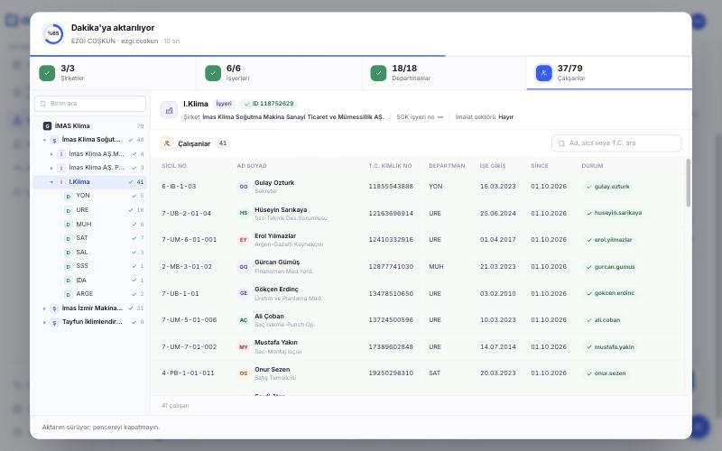
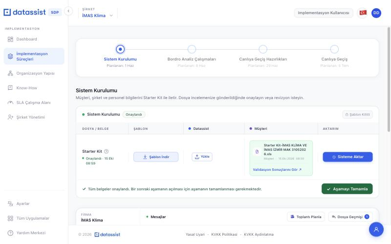
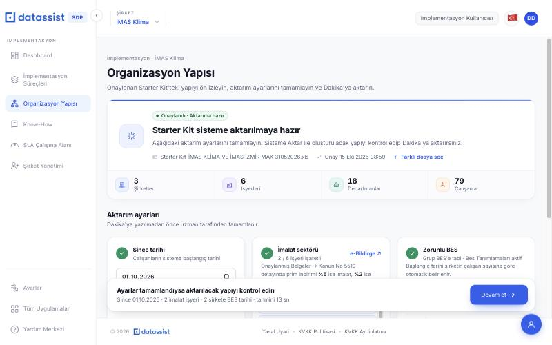
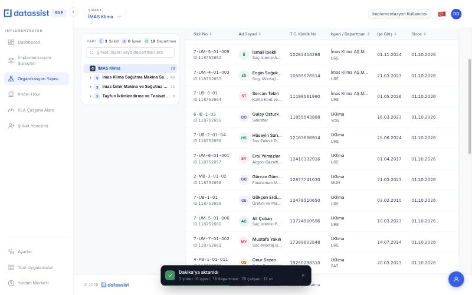
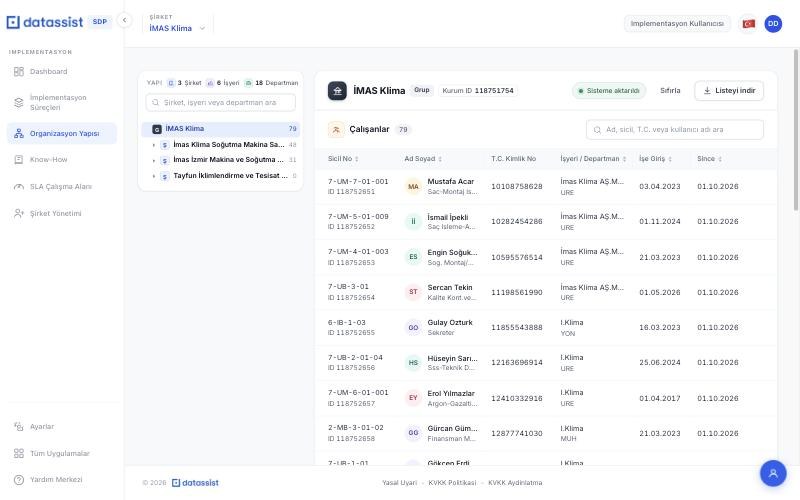
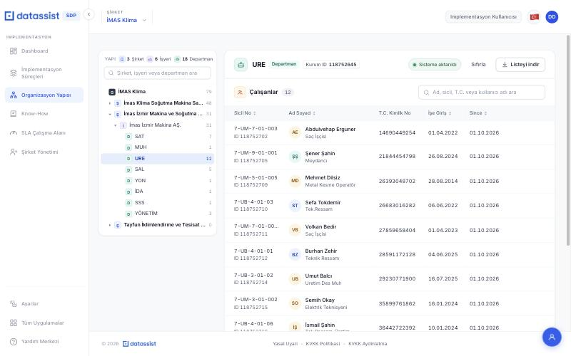

30 Ekim 2026 · Kaynak: SDP prototipi (Sisteme Aktar akışı) ve "Organizasyon Yapısı ve Sisteme Aktar" dokümanı
Bu rapor, SDP prototipinde çalışan Sisteme Aktar akışının gerçek sisteme taşınması için açılacak işleri listeler. Uzmanın onayladığı Starter Kit'teki şirket, işyeri, departman ve çalışanlar tek tuşla Dakika'ya aktarılır. Bugün bu kurulum Dakika toplu aktarım ekranlarında adım adım ve elle yapılıyor.
İşler faza bölünmemiştir. Tek bir sıra halindedir; bir iş, "Önce bitmesi gereken" satırında yazan iş bitince başlar. Bölünmeyi gerçekten gerektiren yerler dışında işler birleştirilmiştir. Sıra şu mantıkla kuruldu: plan (SA-01) her şeyin girdisidir; birimler (SA-02) olmadan BES ve çalışanlar unit ID alamaz; ekranlar ancak aktarım akışı (SA-05) ve sonuç servisi (SA-06) hazır olunca bağlanır; SA-09 bağımsızdır.
Geliştirme Claude Code ile yapay zekâ desteğiyle yapılacak. Prototip kodu (starter-kit-setup.js, starter-kit-sheet.js) referanstır: kurallar, alan eşleşmeleri ve ekranlar oradan alınır. Mevcut implementation-service genişletilir; grup firma açılışında zaten oluşur.
Açıklama: "Şu an", "Olması gereken" ve "Nasıl kontrol edilir" bölümleri olduğu gibi kopyalanır.
Atama ve SP: Kartlar yazılımcıya atanır; story point alanına kartta yazan SP girilir.
Etiket ve sıra: Her kart sisteme-aktar etiketini alır. Faz etiketi yoktur. "Sıra" numarası açıklamanın en üstüne yazılır; kartlar bu sırayla dizilir (rank).
Kararlar: Verilen kararlar için ayrı kart açılmaz; kartta geçen karar kodunun sonucu "Verilen kararlar" tablosundan kartın açıklamasına "Karar:" başlığıyla eklenir.
Ekran görüntüleri: Kartta yazan görsel numarasına ait dosya (ekran/NN-...jpg) karta eklenir. Eklenemiyorsa dosya adı açıklamaya yazılır.
Bağlantılar: Kartta "Önce bitmesi gereken" yazıyorsa, o kartla "blocks" ilişkisi kurulur.
İş listesi ve tahmini süre
Sıra
Kod
İş
SP
Önce bitmesi gereken
1
SA-01
Onaylı Starter Kit'ten aktarım planı oluşturulsun
5
—
2
SA-02
Dakika'da şirket, işyeri ve departmanlar oluşturulsun
5
SA-01
3
SA-03
Zorunlu BES tanımı yapılsın
3
SA-02
4
SA-04
Çalışanlar oluşturulsun; ücret, banka ve since yazılsın
5
SA-02
5
SA-05
Aktarım tek tuşla, sırayla ve izlenebilir çalışsın
5
SA-02, SA-03, SA-04
6
SA-06
Organizasyon Yapısı servisi ve Listeyi indir
3
SA-05
7
SA-07
Aktarım ekranları gerçek servise bağlansın
5
SA-01, SA-05
8
SA-08
Organizasyon Yapısı sayfası gerçek servise bağlansın
3
SA-06
9
SA-09
İşyeri SGK no validasyonu (23 / 26 hane)
2
— (bağımsız)
Toplam
36
SP ölçeği: küçük iş 2 SP, orta iş 3 SP, büyük iş 5 SP.
Kaç günde biter?
Tek yazılımcı, Claude Code ile ve prototip referans alınarak yaklaşık 10 iş günü (2 hafta). Kişi başına haftada ortalama 17–18 SP düşüyor; 36 SP iki haftaya denk geliyor.
1. hafta: SA-01, SA-02, SA-03, SA-04 (servis tarafı ve Dakika bağlantıları). SA-09 araya alınabilir.
2. hafta: SA-05, SA-06, SA-07, SA-08 ve uçtan uca test (İMAS ve Plasten Starter Kit'leriyle).
Süreyi uzatabilecek tek risk: Dakika toplu işlem servislerine (birim toplu yaratma, toplu çalışan yaratma, toplu değer güncelleme, Bes Tanımlamaları) test ortamında erişim. Erişim ilk gün hazır değilse SA-02'den itibaren her iş gecikir. Erişim ve örnek istek/yanıt ilk gün sağlanmalı.
İŞLER
Sisteme Aktar
SA-01
Onaylı Starter Kit'ten aktarım planı oluşturulsun
Sıra 1sisteme-aktarYazılımcı5 SPÖncelik: Yüksek
Şu an: Prototipte onaylı Starter Kit tarayıcıda okunup plan çıkarılıyor (buildSetupPlan). Serviste böyle bir şey yok.
Olması gereken: implementation-service, firmanın en son onaylanan Starter Kit dosyasını okur ve aşağıdaki kurallarla bir aktarım planı üretir. Plan bir API ile döner; ekranlar (SA-07) ve aktarım (SA-05) bu planı kullanır.
1. Sayfayı ve başlık satırını bulma
Sayfa adına göre değil, başlık satırına göre bulunur. Her sayfanın ilk 40 satırı taranır; aranan başlıkları içeren ilk satır başlık satırıdır. Veri bir alt satırdan başlar.
Başlıklar karşılaştırılmadan önce sadeleştirilir: küçük harfe çevrilir, Türkçe karakterler sadeleşir (ı→i, ş→s, ğ→g, ü→u, ö→o, ç→c), harf ve rakam dışındaki her şey (boşluk, nokta, slash, soru işareti) atılır. Örnek: "İşyeri ID / Adı" → isyeriidadi, "Vergi No." → vergino.
Şirket Bilgi:sirketadi başlığının olduğu sayfa. Satırlar ilk tamamen boş satıra kadar okunur.
İşyeri Bilgi: hem baglibulundugusirketadi hem isyeriadi başlığının olduğu sayfa. Şirket ya da işyeri adı boş satır atlanır; tamamen boş satırda okuma biter. Başlığın altında "Evet/Hayır" gibi açıklama satırı varsa atlanmış olur.
Kişisel Bilgi: çalışan alanlarından (sicil, ad, soyad, T.C., doğum tarihi, işe giriş, SGK sicil, maaş, IBAN…) en az 5'inin bulunduğu satır başlık satırıdır. Sicil, ad, soyad ve T.C.'nin dördü de boş olan satır çalışan sayılmaz, atlanır.
Sütun adları ve sadeleştirilmiş karşılıkları için bkz. Ek A.
2. Şirketler
Şirket Bilgi'deki her satır bir şirkettir: ad, ticari unvan, ticaret sicil no, Mersis no, vergi no, telefon.
Aynı şirket iki kez gelirse (sadeleştirilmiş ad aynıysa) bir kez alınır.
Telefon ülke kodu ve numaraya ayrılır: rakam dışı karakterler atılır; 0090 ile başlıyorsa ilk 4 hane, 90 ile başlıyor ve 12 haneyse ilk 2 hane, sonra baştaki 0 atılır. Ülke kodu her zaman 90. Örnek: "0 (380) 549 73 42" → 90 + 3805497342.
3. İşyerleri
İşyeri Bilgi'deki her satır, "Bağlı Bulunduğu Şirket Adı" ile eşleşen şirketin altına girer (sadeleştirilmiş adla eşleşme). Şirket Bilgi'de olmayan bir şirket adı geçerse şirket yine oluşturulur ve "sayfada yok" işaretlenir.
Alınan alanlar: adres, işyeri SGK no, "İmalat Sektörü mü?" beyanı, SGK sistem kullanıcı adı, SGK sistem kullanıcı kodu, SGK sistem şifresi, SGK işyeri şifresi, İŞKUR kullanıcı adı, İŞKUR şifresi.
"İmalat Sektörü mü?" başlığı açıklamayla gelebilir ("İmalat Sektörü mü? Evet/Hayır"); sadeleştirilmiş başlığı imalatsektoru ile başlayan sütun alınır. Bu değer yalnız ipucudur; Dakika'ya uzmanın işaretlediği yazılır (SA-02).
Aynı şirkette aynı adlı işyeri bir kez alınır.
4. Departmanlar ve çalışanlar (Kişisel Bilgi)
Her çalışan satırının şirketi "Şirket Id / Adı" sütunundan, işyeri "İşyeri ID / Adı" sütunundan, departmanı "Departman Adı" sütunundan bulunur.
Şirket boşsa: Şirket Bilgi'deki ilk şirket. İşyeri boşsa: o şirketin ilk işyeri; şirketin hiç işyeri yoksa şirket adıyla bir işyeri.
Kişisel Bilgi'de geçen ama İşyeri Bilgi'de olmayan işyeri oluşturulur ve "İşyeri sayfasında yok" işaretlenir. (İMAS örneği: "I.KLIMA".)
Departman işyerinin altında yalnız adıyla oluşur. Aynı işyerinde aynı adlı departman (sadeleştirilmiş ad) bir kez oluşur. Departmanı boş çalışan doğrudan işyerine bağlanır.
Çalışandan alınan alanlar: sicil, ad, soyad, cinsiyet, T.C., doğum tarihi, işe giriş, kıdem tarihi, SGK sicil no, meslek kodu, pozisyon, maaş, banka, IBAN, "Zorunlu Bes Uygulamasına Tabi Mi?".
5. Zorunlu BES hesabı
Grup tabi mi? Kişisel Bilgi'de "Zorunlu Bes Uygulamasına Tabi Mi?" sütunu "Evet" ya da "E" olan en az bir çalışan varsa grup zorunlu BES'e tabidir. Hiç yoksa BES hesabı yapılmaz.
Çalışan sayısı nereden sayılır? Her şirket için ayrı sayılır: Kişisel Bilgi'de o şirkete bağlanan (bölüm 4'teki eşleştirmeyle; şirketin bütün işyerleri ve departmanları dahil) çalışan satırlarının sayısı. İşten Çıkış Tarihi dolu olan satırlar sayılmaz. Sayım Starter Kit'ten yapılır; Dakika'dan okunmaz.
Başlangıç tarihi bu sayıya göre şu tablodan bulunur:
Şirketteki çalışan sayısı
BES başlangıç tarihi
1000 ve üzeri
01.01.2017
250 – 999
01.04.2017
100 – 249
01.07.2017
50 – 99
01.01.2018
10 – 49
01.07.2018
5 – 9
01.01.2019
0 – 4
Tarih yok (BES tanımı yapılmaz)
Plan her şirket için çalışan sayısı, aralık ve BES başlangıç tarihi döner.
İMAS'ta 48 çalışanlı şirket → 10–49 aralığı → 01.07.2018; 31 çalışanlı şirket → 01.07.2018; çalışanı olmayan şirket → tarih boş.
Plasten Starter Kit'i: 201 çalışan satırı, 2'sinin İşten Çıkış Tarihi dolu → BES sayısı 199 → 100–249 → 01.07.2017. Telefon 90 + 3805497342, Mersis 0730 0752 6350 0001, ticaret sicil 13871.
Kişisel Bilgi'ye İşten Çıkış Tarihi dolu bir satır eklenince şirketin BES sayısı değişmez; çıkış tarihi silinince 1 artar.
Önce bitmesi gereken: — · Karar: K-SA-04, K-SA-05, K-SA-09, K-SA-10
Dakika'da şirket, işyeri ve departmanlar oluşturulsun
Sıra 2sisteme-aktarYazılımcı5 SPÖncelik: Yüksek
Şu an: Uzman şirket, işyeri ve departmanları Dakika toplu aktarım ekranlarından elle açıyor. Diğer sekmesi, telefon, SGK / İŞKUR bilgileri ve imalat tiki de elle giriliyor.
Olması gereken: Plan, Dakika'nın birim toplu yaratma işlemiyle (CreateBulkUnitFileUpload) üç adımda yazılır. Her adım bir öncekinin döndürdüğü unit ID'leri kullanır:
Şirketler grubun altına açılır. Grup firma açılışında oluşmuştur; ID'si implementation-service'te vardır.
İşyerleri bağlı oldukları şirketin altına açılır.
Departmanlar işyerinin altına, yalnız adıyla açılır.
Şirkete yazılanlar:
Detaylı Görünüm › Diğer sekmesi: Ticari Unvan, Ticaret Sicil No, Mersis No. Mersis boşsa alan boş bırakılır.
Telefon: ülke kodu alanına 90, numara alanına ayrılmış numara (SA-01 bölüm 2).
Vergi no şirket kartına.
1003B kullanıcı kodu / parola / şifre yazılmaz.
İşyerine yazılanlar: adres, işyeri SGK sicil no (Starter Kit'te nasıl yazıldıysa, boşluklar atılarak), SGK sistem kullanıcı adı, SGK sistem kullanıcı kodu, SGK sistem şifresi, SGK işyeri şifresi, İŞKUR kullanıcı adı, İŞKUR şifresi. Şifreler açık yazılır ve saklanır (K-SA-03).
İmalat Sektörü İşveren tiki yalnız uzmanın aktarım ayarlarında işaretlediği işyerlerinde açılır; Starter Kit'teki "Evet" tek başına tiki açmaz.
Her birimin Dakika'daki unit ID'si plandaki birimin yanına kaydedilir; ekranlarda "Kurum ID" diye gösterilir.
Nasıl kontrol edilir:
İMAS aktarılır; Dakika'da 3 şirket grubun altında, 6 işyeri doğru şirketlerin altında, 18 departman doğru işyerlerinin altında görünür.
"İmas Klima Soğutma…" şirketinin Diğer sekmesinde ticari unvan "İMAS AŞ." ve sicil no "5081"; telefon ülke kodu 90.
Ayarlarda yalnız "İmas Klima AŞ.Merkez" işaretlenmişse, imalat tiki yalnız o işyerinde açık.
Plasten aktarılır; işyerinde SGK sistem kullanıcı adı ve şifreleri Starter Kit'tekiyle aynı.
Görsel 05 · İşyeri seçiliyken: bağlı şirket, SGK işyeri no ve imalat bilgisi
SA-03
Zorunlu BES tanımı yapılsın
Sıra 3sisteme-aktarYazılımcı3 SPÖncelik: Orta
Şu an: Uzman grubu "zorunlu BES'e tabi" seçiyor. Sonra her şirket için çalışanları sayıp başlangıç tarihini tablodan buluyor ve Kurum › Düzelt › Standart Görünüm › Çalışma › Bes Tanımlamaları'na elle giriyor.
Olması gereken: Şirketler Dakika'da oluştuktan sonra (SA-02), plan "grup zorunlu BES'e tabi" diyorsa:
Grupta "Zorunlu BES uygulamasına tabi" alanı Evet yapılır.
Her şirkette Standart Görünüm › Çalışma › Bes Tanımlamaları aktif tiki işaretlenir ve başlangıç tarihi yazılır.
Plan grubu tabi saymıyorsa bu adım hiç çalışmaz.
Başlangıç tarihi nasıl bulunur: SA-01 bölüm 5'te hesaplanır, burada yeniden hesaplanmaz. Özetle:
Grup tabi mi: Kişisel Bilgi'de "Zorunlu Bes Uygulamasına Tabi Mi?" = Evet / E olan en az bir çalışan.
Çalışan sayısı: o şirkete bağlı Kişisel Bilgi satırları (bütün işyerleri ve departmanlar dahil), İşten Çıkış Tarihi dolu olanlar hariç.
Tarihi boş şirket (0–4 çalışan): Bes Tanımlamaları aktif yapılmaz, tarih yazılmaz; aktarım durmaz, sonuçta bu şirket "BES tarihi yok" diye işaretlenir.
Nasıl kontrol edilir:
İMAS aktarılır: grupta zorunlu BES Evet; 48 ve 31 çalışanlı iki şirkette Bes Tanımlamaları aktif ve başlangıç 01.07.2018; çalışansız Tayfun şirketinde BES tanımı yok ve sonuçta işaretli.
Plasten aktarılır: tek şirket, BES sayısı 199 (201 satırdan 2'si işten çıkmış), başlangıç 01.07.2017.
BES sütununda hiç "Evet" olmayan bir Starter Kit aktarılırsa BES adımı atlanır.
Önce bitmesi gereken: SA-02 · Karar: K-SA-09
Görsel: 03

Görsel 03 · Aktarım ayarları: Zorunlu BES kartında şirket başına çalışan sayısı ve başlangıç tarihi
SA-04
Çalışanlar oluşturulsun; ücret, banka ve since yazılsın
Sıra 4sisteme-aktarYazılımcı5 SPÖncelik: Yüksek
Şu an: Uzman unit ID'leri Excel'e ekleyip toplu çalışan yaratma ve toplu değer güncelleme ekranlarından ayrı ayrı yüklüyor.
Olması gereken: İki adımda:
Toplu çalışan yaratma (CreateEmployeeUpload): her çalışan, departmanı varsa departmanın unit ID'sine, yoksa işyerinin unit ID'sine bağlanır. Sicil, ad, soyad, cinsiyet, T.C., doğum tarihi, işe giriş, kıdem tarihi, SGK sicil no, meslek kodu ve pozisyon Kişisel Bilgi'den aynen alınır.
Toplu değer güncelleme: maaş, banka, IBAN ve since tarihi yazılır.
Since tarihi nasıl bulunur: Uzman aktarım ayarlarında bir tarih seçer (varsayılan: içinde bulunulan ayın 1'i). Her çalışan için:
İşe giriş tarihi seçilen tarihten sonraysa → since = işe giriş tarihi.
Değilse (önce ya da aynı gün) → since = seçilen tarih.
İşe giriş tarihi boş ya da okunamıyorsa → since = seçilen tarih.
Tarihler GG.AA.YYYY, GG/AA/YYYY ya da GG-AA-YYYY olarak okunur.
Örnek: seçilen 01.10.2026. İşe giriş 03.04.2023 → since 01.10.2026. İşe giriş 12.10.2026 → since 12.10.2026.
Kullanıcı adı nasıl üretilir:ad.soyad, küçük harf. Türkçe karakterler sadeleşir (ı→i, ş→s, ğ→g, ü→u, ö→o, ç→c); harf ve nokta dışındaki her şey atılır; arka arkaya gelen noktalar teke iner, baştaki ve sondaki nokta atılır. Aynı kullanıcı adı varsa sonuna 2, 3… eklenir. Sonuç boşsa kullanici kullanılır. Örnek: "Engin Soğukdağ" → engin.sogukdag.
Her çalışanın Dakika çalışan ID'si ve kullanıcı adı saklanır (SA-06'da gösterilir).
Nasıl kontrol edilir:
İMAS aktarılır: 79 çalışan Dakika'da doğru birimlerde; departmanı olan URE departmanında, olmayan işyerinde.
Kullanıcı adları tekil; aynı ad soyadlı iki çalışandan ikincisi …2 alır.
Since 01.10.2026 seçilir: 01.05.2026'da giren Sercan Tekin'in since'i 01.10.2026; işe girişi 12.10.2026 olan test çalışanının since'i 12.10.2026.
Maaş ve IBAN Starter Kit'tekiyle aynı.
Önce bitmesi gereken: SA-02 · Karar: K-SA-08
Görsel: 06
SA-05
Aktarım tek tuşla, sırayla ve izlenebilir çalışsın
Sıra 5sisteme-aktarYazılımcı5 SPÖncelik: Yüksek
Şu an: Prototipte aktarım tarayıcıda simüle ediliyor; gerçek bir aktarım işi ve durum bilgisi yok.
Olması gereken: implementation-service'te bir aktarım işi. Önerilen uç noktalar (adlar servisin mevcut düzenine uyarlanır):
Uç nokta
Ne yapar
GET …/system-setup/plan
SA-01'in planını döner (ekranlar için).
POST …/system-setup/transfer
Aktarımı başlatır. Gövde: sinceDate (YYYY-AA-GG), manufacturingWorkplaces (imalat işaretlenen işyerlerinin plan anahtarları). Bir iş numarası döner.
GET …/system-setup/transfer/{iş}
Durum: running / done / failed, o anki adım, adım bazında yapılan / toplam, son işlem metni, geçen süre, hata.
Adım sırası (biri bitmeden diğeri başlamaz): şirketler → işyerleri → BES (grup tabi değilse atlanır) → departmanlar → çalışanlar → ücret / banka / since.
Sayaçlar: şirket, işyeri, departman ve çalışan adımlarında yapılan / toplam (örn. 3/3, 6/6, 18/18, 37/79). Ekran durumu 1–2 saniyede bir okur.
Son işlem metni örnekleri: "İmas Klima AŞ.Merkez işyeri İmas Klima Soğutma… altına açıldı", "URE departmanı … altına açıldı", "Engin Soğukdağ · engin.sogukdag".
Hata: Dakika bir adımda hata dönerse aktarım durur, sonraki adımlara geçmez. Durum: hangi adım, hangi kayıt (ad), Dakika'nın hata mesajı. O ana kadar oluşan kayıtlar ve ID'leri saklanır.
Tekrar başlatma: Aynı firma için aktarım sürerken ya da başarıyla bittikten sonra yeni aktarım başlatılamaz (409). Gerçek sistemde Sıfırla olmadığından (K-SA-02), hata ile durmuş aktarım hata giderildikten sonra kaldığı adımdan devam ettirilir: Dakika'da oluşmuş kayıtlar (ID'si saklananlar) yeniden oluşturulmaz, kalanlar oluşturulur. Önerilen uç nokta: POST …/system-setup/transfer/{iş}/resume.
Yetki: Yalnız implementasyon ekibi başlatabilir; müşteri rolü başlatamaz.
Nasıl kontrol edilir:
İMAS aktarılırken durum sorgusu adımların sırayla ilerlediğini ve sayaçların dolduğunu gösterir; bitişte done.
Sürerken ikinci başlatma isteği reddedilir.
Dakika test ortamında departman adımı bilerek bozulduğunda aktarım durur; durum failed, adım "departmanlar", kayıt adı ve hata mesajı döner; çalışan adımına geçilmez.
Hata ile duran aktarım devam ettirilince yalnız eksik kayıtlar oluşur; Dakika'da çift kayıt olmaz.
Müşteri hesabıyla başlatma isteği reddedilir.
Önce bitmesi gereken: SA-02, SA-03, SA-04 · Karar: K-SA-02
Görsel: 06

Görsel 06 · Aktarım sürerken: yüzde, son işlem, sayaçlar, oluşan birimler ve kullanıcı adları
SA-06
Organizasyon Yapısı servisi ve Listeyi indir
Sıra 6sisteme-aktarYazılımcı3 SPÖncelik: Orta
Şu an: Prototipte sonuç tarayıcıda tutuluyor; sayfa yenilenince kayboluyor.
Olması gereken: Aktarım sonucu firma bazında kalıcı saklanır ve bir API ile döner:
Ağaç: grup → şirketler → işyerleri → departmanlar; her birimde ad, tür, Kurum ID (Dakika unit ID), çalışan sayısı.
Çalışanlar: sicil, Dakika çalışan ID'si, ad, soyad, pozisyon, T.C., işyeri, departman, işe giriş, since, kullanıcı adı.
Aktarım bilgisi: bitiş tarihi ve saati, kullanılan Starter Kit dosyasının adı, BES tarihi olmayan şirketler.
Sicil No, Adı, Soyadı, T.C. Kimlik No, Şirket, İşyeri, Departman, Kurum ID, Çalışan ID, Kullanıcı Adı, İşe Giriş, Since Tarihi
Şirket ve İşyerleri
Şirket, İşyeri, Kurum ID, Ticari Ünvan, Ticaret Sicil No, Mersis No, Telefon Ülke Kodu, Telefon, BES Başlangıç, İşyeri SGK No, İmalat Sektörü İşveren (Evet/Hayır), SGK Sistem Kullanıcı Adı, SGK Sistem Kullanıcı Kodu, SGK Sistem Şifresi, SGK İşyeri Şifresi, İŞKUR Kullanıcı Adı, İŞKUR Şifresi
Nasıl kontrol edilir: İMAS aktarıldıktan sonra sayfa yenilense de yapı ve 79 çalışan gelir. İndirilen Excel'de iki sayfa var; her çalışanda Kurum ID, Çalışan ID ve since dolu; "Şirket ve İşyerleri" sayfasında 6 satır.
Önce bitmesi gereken: SA-05 · Karar: K-SA-03
Görsel: 08
SA-07
Aktarım ekranları gerçek servise bağlansın
Sıra 7sisteme-aktarYazılımcı5 SPÖncelik: Yüksek
Şu an: Ekranlar prototipte hazır (starter-kit-setup.js, starter-kit-setup.css) ama sahte veriyle çalışıyor.
Olması gereken: Prototipteki ekranlar aynı tasarımla SA-01 ve SA-05'e bağlanır.
1. Süreçler › Sistem Kurulumu
Starter Kit belgesi onaylı ve kullanıcı implementasyon ekibindense belge tablosunun Aktarım sütununda Sisteme Aktar görünür. Müşteri görmez; onay bekleyen aşamada görünmez.
Buton modal açmaz, Organizasyon Yapısı sayfasına götürür. Aktarım bittiyse metni "Aktarıldı · Yapıyı Gör" olur.

Görsel 01 · Süreçler › Sistem Kurulumu: onaylı Starter Kit ve Sisteme Aktar
2. Organizasyon Yapısı · aktarıma hazır ve ayarlar
Firmada aktarım yoksa ve Starter Kit onaylıysa sayfa bu ekranla açılır. Starter Kit onaylı değilse boş durum ve "İmplementasyon Süreçleri'ne git" gösterilir.
Durum kartı: "Onaylandı · Aktarıma hazır", dosya adı, onay tarihi, "Farklı dosya seç"; altında şirket / işyeri / departman / çalışan sayıları (plandan).
1 Since tarihi: tarih seçici, varsayılan ayın 1'i. Altında "N çalışan bu tarihten sonra işe girdiği için kendi işe giriş tarihiyle aktarılır" (N plandan hesaplanır).
2 İmalat sektörü: her işyeri için onay kutusu (başta hepsi boş), yanında Starter Kit beyanı "SK: Evet / Hayır", başlıkta "e-Bildirge ↗" bağlantısı (https://ebildirge.sgk.gov.tr/EBildirgeV2) ve "%5 ise imalat, %2 ise değil" açıklaması.
3 Zorunlu BES: salt okunur; şirket başına çalışan sayısı ve başlangıç tarihi; tarihi olmayan "Tarih yok" (turuncu). Grup tabi değilse "Tabi çalışan yok".
Alt çubuk (sayfa kaydırılsa da altta sabit): ayar özeti ve Devam et. Since boşken Devam et pasif.

Görsel 02 · Aktarıma hazır: durum kartı ve sayaçlar
3. Aktarılacak yapı penceresi
Sol: tek satırlık ağaç (G grup, Ş şirket, İ işyeri, D departman + çalışan sayısı). Açılışta yalnız grup ve şirketler görünür; birime tıklayınca altı açılır, ok sadece açar/kapatır. Arama eşleşen dalları açar.
Sağ: seçili birimin adı, türü, durumu; şirkette ticari unvan, sicil, vergi no, BES; işyerinde bağlı şirket, SGK no (23/26 hane değilse "hane sayısı hatalı"), imalat. Altında çalışan tablosu: Sicil No, Ad Soyad + pozisyon, T.C., İşyeri / Departman, İşe Giriş, Since, Durum; ad, sicil, T.C. ile arama; en fazla 300 satır.
Ayarlara dön (Esc ve pencere dışına tıklama da) ayarları koruyarak kapatır. Aktar, SA-05'teki başlatma isteğini gönderir.
Görsel 05 · Pencerede bir işyeri seçili
4. Aktarım ve bildirim
Aktar'dan sonra pencere kapatılamaz. Başlık "Dakika'ya aktarılıyor"; yüzde halkası, son işlem metni, geçen süre; sayaçlar (SA-05 durumundan).
Oluşan birimin yanına ağaçta yeşil ✓; tabloda Durum "Sırada" → "✓ kullanıcı.adı". Hata gelirse pencerede adım, kayıt ve hata mesajı ile Kaldığı yerden devam et butonu gösterilir (SA-05 devam isteği).
Bitince pencere kapanır, sayfa Organizasyon Yapısı'na döner; altta "Dakika'ya aktarıldı · 3 şirket · 6 işyeri · 18 departman · 79 çalışan · N sn" bildirimi 6 saniye kalır ve kayarak kapanır (× ile erken kapanır).

Görsel 07 · Aktarım sonrası alttaki bildirim
Nasıl kontrol edilir: Süreçler › Sisteme Aktar → ayarlar → Devam et → Aktar akışı İMAS ile baştan sona çalışır; müşteri hesabında buton görünmez; since boşken Devam et pasif.
Önce bitmesi gereken: SA-01, SA-05 · Karar: K-SA-07, K-SA-11
Görsel: 01, 02, 03, 04, 05, 06, 07
SA-08
Organizasyon Yapısı sayfası gerçek servise bağlansın
Sıra 8sisteme-aktarYazılımcı3 SPÖncelik: Orta
Şu an: Sayfa prototipte tarayıcıdaki sonuçla çalışıyor.
Olması gereken: Aktarım yapılmış firmada sayfa SA-06'dan dolar:
Sol: aynı tek satırlık ağaç; üstte "Yapı · 3 Şirket · 6 İşyeri · 18 Departman" ve arama. Açılışta grup seçili, şirketler kapalı.
Sağ üst: seçili birimin adı, türü ve Kurum ID'si. Sağında "Sisteme aktarıldı" etiketi (üzerine gelince tarih ve dosya adı), ve Listeyi indir. Sıfırla yoktur (K-SA-02); düzeltmeler Dakika'da yapılır. Birim bilgi satırları (ticari unvan, SGK no vb.) burada gösterilmez.
Çalışan tablosu: Sicil No + altında Çalışan ID, Ad Soyad + pozisyon, T.C., İşyeri / Departman (departman seçiliyken gizli), İşe Giriş, Since. Sicil, ad, birim, işe giriş ve since'e göre sıralanır; ad, sicil, T.C. ve kullanıcı adıyla aranır; sayfa başına 25. Kullanıcı adı Since hücresinin üzerine gelince görünür.
Nasıl kontrol edilir: İMAS sonrası sayfa yenilenince yapı gelir; URE departmanı seçilince yalnız o departmanın çalışanları ve Kurum ID'si görünür; Listeyi indir SA-06'daki Excel'i indirir.
Önce bitmesi gereken: SA-06 · Karar: K-SA-02
Görsel: 08, 09

Görsel 08 · Organizasyon Yapısı, grup seçili

Görsel 09 · Organizasyon Yapısı, departman seçili
SA-09
İşyeri SGK no validasyonu (23 / 26 hane)
Sıra 9sisteme-aktarYazılımcı2 SPÖncelik: Orta
Şu an: Starter Kit validasyonu İşyeri Bilgi sayfasını kontrol etmiyor. Yanlış girilen SGK işyeri numarası uzman SGK uygulamalarına bakınca fark ediliyor.
Olması gereken: Starter Kit validasyonu İşyeri Bilgi sayfasını da tanır (SA-01 bölüm 1'deki başlık kuralıyla: baglibulundugusirketadi, isyeriadi, isyerisgknumarasi). İşyeri adı dolu her satırda:
SGK no'dan rakam dışı her şey atılır, rakamlar sayılır.
Rakam yoksa: uyarı "İşyeri SGK numarası boş bırakılmış."
Rakam sayısı 23 ya da 26 değilse: uyarı "İşyeri SGK numarası N haneli; 23 veya 26 hane olmalı." Düzeltme notu: "SGK'daki işyeri sicil numarasını 23 veya 26 hane olarak eksiksiz yazın (son 3 hane aracı numarasıdır)."
Uyarıdır, hata değildir: müşteri dosyayı yine gönderebilir.
Nasıl kontrol edilir:2 2932 01 01 1030970 081 03 02 000 (26 hane) ve İMAS'taki 228250101114333503518-37 (23 hane) uyarı vermez; 20 haneli bir numara ve boş hücre uyarı verir; dosya gönderilebilir.
Önce bitmesi gereken: — · Karar: K-SA-06
Görsel: —
Ek A · Starter Kit sütunları
Başlık metni Starter Kit'te yazdığı gibidir. "Eşleşme anahtarı", başlığın sadeleştirilmiş halidir (küçük harf, Türkçe karakter sadeleşir, harf ve rakam dışı atılır). Birden fazla anahtar verilen alanda hangisi bulunursa o kullanılır.
Kişisel Bilgi'de başlık satırının üstünde İngilizce başlık satırı vardır; başlık satırı, en az 5 alanın eşleştiği satırdır, İngilizce satır bu yüzden seçilmez.
Verilen kararlar
Kod
Soru
Karar
K-SA-02
Organizasyon Yapısı'ndaki Sıfırla gerçek sistemde olacak mı?
Hayır. Dakika'da kayıtlar oluşmuş olacağı için Sıfırla yok; düzeltmeler Dakika'da yapılır. Hata ile duran aktarım kaldığı yerden devam ettirilir (SA-05).
K-SA-03
SGK ve İŞKUR kullanıcı adı / şifreleri nasıl aktarılır?
Starter Kit'ten otomatik ve açık aktarılır; SDP ekranlarında ve indirilen Excel'de maskelenmez.
K-SA-04
Ticari unvan, ticaret sicil no ve Mersis nereye yazılır?
Şirket › Detaylı Görünüm › Diğer sekmesine. Mersis zorunlu değil; boşsa atlanır.
K-SA-05
Telefon nasıl yazılır?
Ülke kodu 90 ve numara ayrı alanlara. Başındaki 0 / 90 atılır.
K-SA-06
İşyeri SGK numarası kaç hane olmalı?
26 hane ya da aracı numarası olmadan 23 hane. Başka uzunlukta uyarı; gönderim engellenmez.
K-SA-07
İmalat sektörü nasıl belirlenir?
Uzman e-Bildirge V2 › Onaylanmış Belgeler › Kanun No 5510'a bakar: prim indirimi %5 ise imalat, %2 ise değil. Uzman işaretlerse "İmalat Sektörü İşveren" tiklenir. Starter Kit beyanı yalnız ipucu.
K-SA-08
Çalışanın since tarihi nedir?
Uzmanın seçtiği tarih ile işe giriş tarihinden hangisi geçse. Varsayılan seçim: içinde bulunulan ayın 1'i.
K-SA-09
Zorunlu BES başlangıç tarihi nasıl bulunur?
Şirketin çalışan sayısına göre (Kişisel Bilgi'de o şirkete bağlı satırlar, İşten Çıkış Tarihi dolu olanlar hariç): 1000+ 01.01.2017 · 250–999 01.04.2017 · 100–249 01.07.2017 · 50–99 01.01.2018 · 10–49 01.07.2018 · 5–9 01.01.2019. En az bir çalışan "Evet" ise grup tabidir.
K-SA-10
Starter Kit'in hangi kısımları aktarılmaz?
1003B kullanıcı kodu / parola / şifre; Operasyonel Bilgiler, Masraf Merkezi ve Devreden sayfaları.
İŞKUR bilgileri Know-How / teknik dokümantasyona aktarılsın mı?
Bu işin kapsamı dışında; ayrı iş olarak açılır.
Başka ekiplerden beklenenler
Dakika test ortamı ve servis erişimi: birim toplu yaratma, toplu çalışan yaratma, toplu değer güncelleme ve Bes Tanımlamaları için uç noktalar, örnek istek / yanıt. İlk gün gerekli.
Test Starter Kit'leri: İMAS Klima ve Plasten dosyaları (prototip testlerinde kullanılanlar).